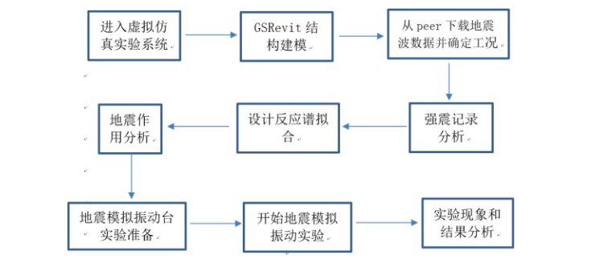
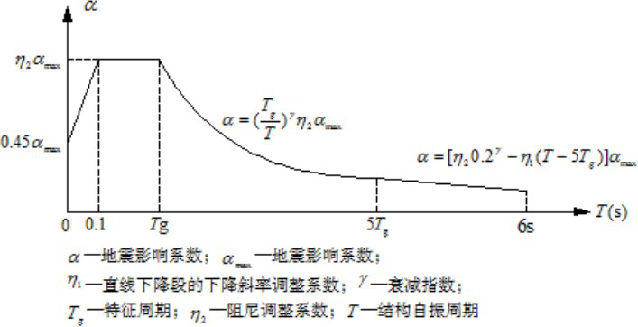

实验教学方法和教学体系
实验教学方法
1、使用目的
通过实验帮助学生认识缩尺建模的方法和设计思路、了解结构计算简图选择的方法、结构动力特性的分析流程和方法、结构动载试验方案的设计方法、结构检测报告的编制 要求和编制方法，了解适用于不同场地类型的多遇（罕遇）第一组、第二组和第三组地 震动，掌握加速度反应谱的绘制方法，理解阻尼比、场地土、震中距等反应谱的影响因 素，理解动力系数β、地震影响系数 α 的意义。
2、实施过程
本实验将安排在《建筑结构试验》结构动力学部分进行授课。具体实施过程为：
（1）学生登录虚拟仿真实验界面，查阅课程相关 PPT、电子文档等资源，为实验做好理论准备。
（2）实验理论知识检测：按照实验过程中涉及的知识点要求，设计小测验，学生达到检测要求后方可进行具体实验，不达标将返回上一步骤，继续进行理论知识学习，系统按照学生测验情况生产“错题统计图”，并发送到任课教师邮箱，辅助任课教师及时发现教学“死角”，及时调整教学方向，为理论教学及时提供反馈信息。
（3）通过理论知识测试后，学生进入虚拟仿真实验系统，具体实验流程如下：

图 2-3 虚拟仿真实验流程
（4）按照学生完成虚拟仿真实验效果，给出涉及知识点实践应用效果评价，将学生实践应用的难点、盲点进行实施反馈，对后期的课程设计、毕业设计等实践教学环节的教学侧重点形成数据支持，进一步提高实践教学质量。
3、实施效果
该虚拟仿真实验教学以网络为载体，将多自由度体系的地震反应实验作为推进完善现有实践教学体系的一环，弥补了众多高校因实验设备昂贵（地震模拟振动台）而无法开设相应实验的缺陷，将理论知识和实践（工程抗震设计）的应用紧密结合，实现了理论教学、实验教学和工程应用的无缝对接，对学生的理论知识学习、应用提供了平台。具体体现：
（1）学生能更加直观地理解和掌握结构缩尺建模、结构计算简图选择、结构动力特性分析、结构动载试验方案设计、地震模拟振动台实验和结构检测报告的编制等相关知识。
（2）通过地震模拟振动实验，使学生对结构抗震设计有了更直接、更具体的了解， 在地震动特性分析、反应谱影响因素分析、地震系数和动力系数的分析中，锻炼了学生的数据分析能力，提升了学生的实验能力，强化了学生解决工程问题的能力。
（3）通过结构动力特性分析，使学生的理论知识学习和生产实践应用实现了无缝对
教学体系
在软件的引导下，学生进行交互式的自主研究学习，了解缩尺建模，熟悉结构计算简图选择，理解结构动力特性分析，强化抗震设计知识，利用结构建模提取的人工地震波和强震记录分析，拟合规范反应谱的人工地震波，进行地震模拟振动台实验的虚拟仿真，了解地震波形频谱分析、反应谱绘制、地震作用计算，熟悉振动台的结构和地震模拟振动台实验过程，得出多自由度结构体系在不同的地震波下的地震反应和破坏现象， 强化学生对现行结构设计规范的学习以及对结构抗震设计理念的理解。
学生交互性操作步骤说明：
1） 结构缩尺建模（1 学时）
2） 结构计算简图选择
3） 结构动力特性分析（1 学时）
4） 结构动载试验方案设计（1 学时）
5） 地震模拟振动台实验（4 学时）
①多自由度结构体系设计模块（1 学时 ）
第一步：按照给定条件填写结构信息、布置构件；布置结构荷载；
第二步：通过 GSRevit 生成人造波，并对人造波进行谱分析。
②强震记录分析模块 （1 学时 ）
第三步：在预设好的第一组、第二组和第三组地震数据库中分析选择适应指定场地土类型的强震记录。地震动经分析显示功率谱，从频谱图中记录地震动的卓越周期。
第四步：嵌入实验过程小测验 1：不同地震动的频谱特性比较分析
③反应谱分析模块 （1 学时）
第五步：将不同类型地震动分别输入结构模型进行地震响应数值分析，在加速度时程曲线中分别记录加速度响应的峰值
第六步：绘制反应谱曲线，将结构自振周期作为横坐标，将加速度峰值作为纵坐标第七步：调整场地土类型，重复地震反应分析，绘制反应谱曲线
第八步：调整震中距改变地震动类型，重复地震反应分析，绘制反应谱曲线第九步：调整结构阻尼比，重复进行地震反应分析，绘制反应谱曲线
第十步：拟合标准反应谱曲线（如图 2-4）
④地震模拟振动台实验操作模块（1 学时）
第十一步：嵌入实验过程小测验 2：确定结构自振周期 T、地震影响系数最大值和特征周期 等参数，按照图 2-3 计算地震影响系数 α，由 F=αG 计算地震作用

第十二步：嵌入实验过程小测验 3：学生在振动台相应位置填写振动台构造名称。
第十三步：输入多自由度结构体系的模型尺寸、质量、弹性模量等参数，确定加速度传感器的布点位置
第十四步：模拟加载，记录实验数据
第十五步：选择地震动输入峰值和方向
第十六步：地震动加载并记录实验数据